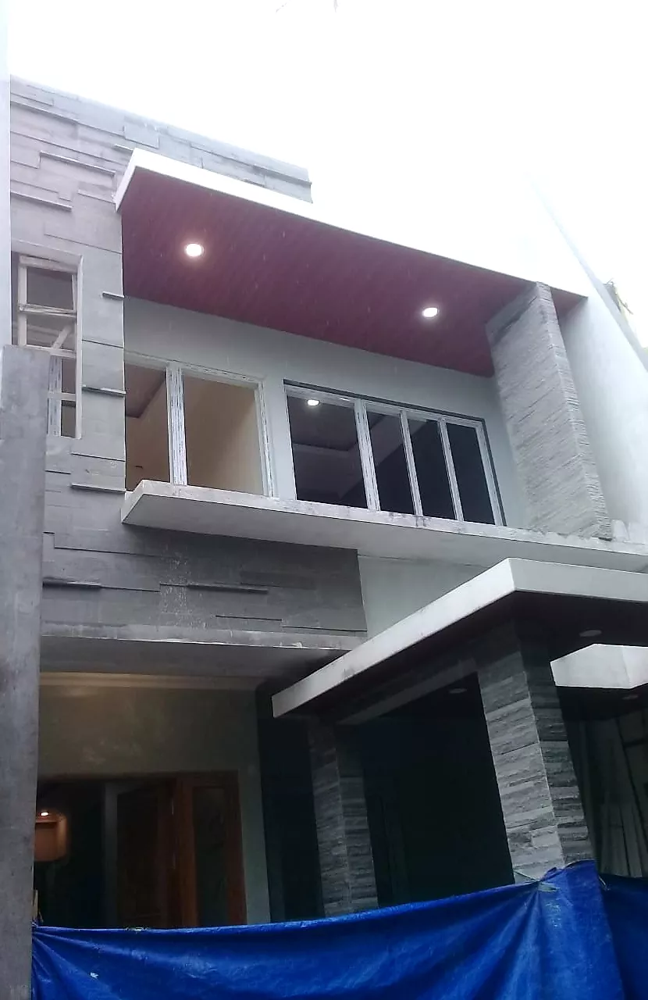
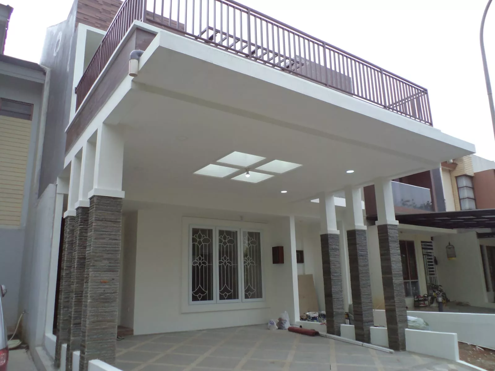

Portofolio Proyek
Kumpulan proyek desain dan pembangunan rumah tinggal yang dirancang sesuai luas lahan, kebutuhan ruang, dan anggaran klien.
 Modern Tropis
7 Foto
Modern Tropis
7 Foto
Hunian Modern Tropis + Mezzanine
Desain dan pembangunan rumah tinggal 1 lantai berkonsep taman dalam (inner courtyard), aksen roster, jendela bulat, dan tangga putar menuju area mezzanine.
 Modern Industrial
4 Foto
Modern Industrial
4 Foto
Hunian Modern Industrial 2 Lantai
Desain dan pembangunan rumah tinggal 2 lantai bergaya maskulin monokrom dengan aksen plafon kayu, roster ventilasi, pilar batu alam, dan bukaan bulat pada pagar depan.
 Renovasi Eksterior
5 Foto
Renovasi Eksterior
5 Foto
Renovasi Carport, Balkon & Taman 2 Lantai
Pengerjaan renovasi area depan rumah 2 lantai meliputi kanopi carport dengan balkon atas, pilar batu alam, railing besi minimalis, serta penataan lanskap taman.
 Minimalis Split-Level
5 Foto
Minimalis Split-Level
5 Foto
Hunian Minimalis 2 Lantai + Semi-Basement
Pembangunan rumah tinggal modern minimalis berkonsep split-level dengan area carport semi-basement, atap miring berkaca atas, panel fasad vertikal, dan batu alam hitam.

Modern Tropis 5 FotoHunian 2 Lantai Fasad Batu Alam & Plafon Kayu
Pembangunan rumah tinggal 2 lantai dengan dominasi aksen batu alam abu-abu, plafon motif kayu ber-downlight, bukaan jendela lebar lantai atas, serta kanopi carport dengan skylight.

Renovasi & Balkon 5 FotoRenovasi Carport Skylight & Balkon 2 Lantai
Pembangunan dak carport beton dengan skylight 4 kotak dan 6 pilar batu alam yang difungsikan sekaligus sebagai balkon lantai 2 ber-railing besi dan kanopi kaca.
*Demi menjaga privasi klien, alamat lengkap proyek dan rincian nominal kontrak tidak ditampilkan secara publik.